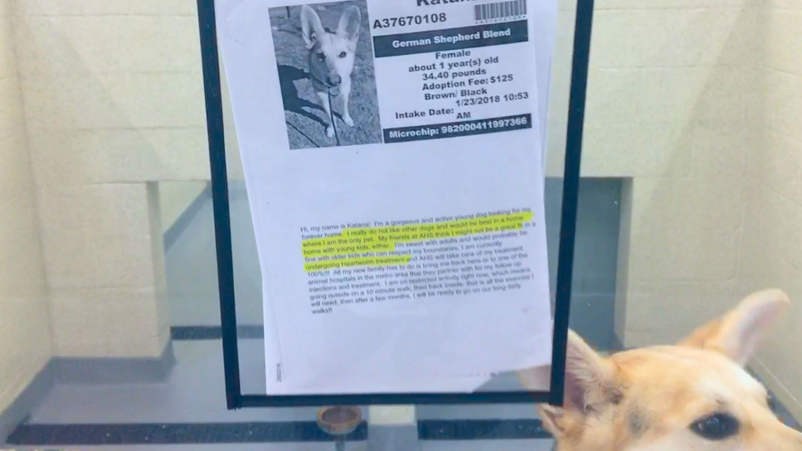
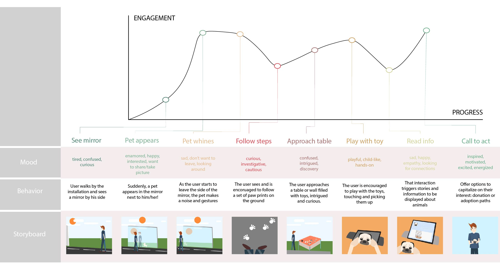
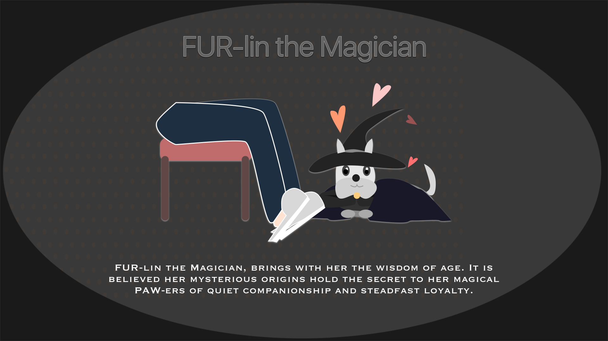
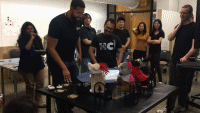

Through research, we found there was an opportunity to encourage adoption of less desirable homeless pets (specifically dogs and cats).
We then began ideating through possible interactions, storyboarding the possible ways to generate empathy from users while mapping out the emotional journey and arc of the users - where we wanted to elicit certain emotions and what we wanted to emphasize.


We settled on a “knights of the round table” theme that not only served to unify our experience around a story, but also provided us archetypes for the different needs of these animals.
These archetypes made it easier for users to identify to different needs of dogs. At the same time, individual dogs could be replaced and fit into their respective archetypes, making it easier to update the experience for the always changing list of animals up for adoption.


Our concept utilized gamified elements: users matched toys that identified with the archetypes to learn more about each individual pet through a projected animated and interactable screen.